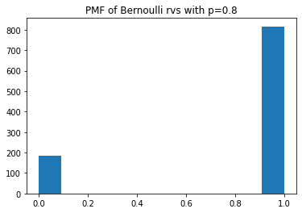
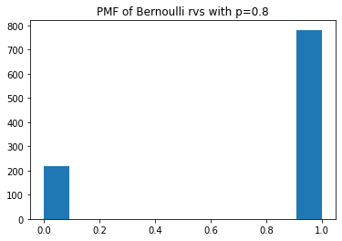
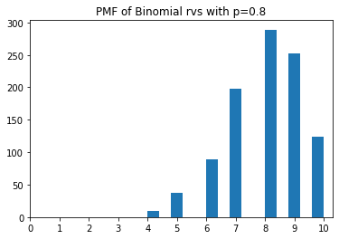
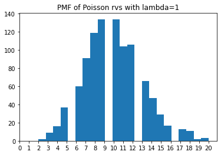
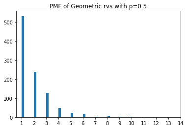

# Generate pseudo data from Bernoulli distribution with p = 0.8.
import numpy as np
p = 0.8 # success prob #change this value and see the difference
n = 1
X = np.random.binomial(n, p, size= 1000)
#print(X)Bernoulli Distribution
mean_x = np.mean(X)
print("%.4f"%mean_x)0.8160var_x = np.var(X)
print("%.4f"%var_x)0.1501import matplotlib.pyplot as plt
plt.hist(X, bins="auto")
plt.title("PMF of Bernoulli rvs with p=0.8")
plt.show()
# Alternative: Use scipy.stats library
import numpy as np
import matplotlib.pyplot as plt
import scipy.stats as stats
p = 0.8 #change this value and see the difference
X = stats.bernoulli.rvs(p,size=1000)
plt.hist(X,bins='auto')
plt.title("PMF of Bernoulli rvs with p=0.8")
plt.show()
Binomial Distribution
# Generate pseudo data from Binomial distribution with p = 0.5.
import numpy as np
p = 0.8 # success prob. #change this value and see the difference
n = 10 # number of trials
X = np.random.binomial(n, p, size= 1000)
#print(X)[ 6 4 7 8 8 9 9 8 8 8 8 9 9 9 8 9 8 8 8 9 9 8 8 7
6 8 8 8 10 8 8 9 9 7 8 9 8 9 9 10 9 7 9 9 10 6 7 8
8 8 10 9 8 8 7 6 8 9 7 10 6 6 8 8 8 8 7 6 10 5 10 8
8 9 9 8 7 8 10 9 8 9 9 8 9 9 8 8 9 8 9 8 9 8 8 7
10 8 8 8 9 7 7 8 4 8 9 9 9 8 7 7 9 9 8 10 8 6 7 8
6 9 7 8 7 8 7 7 10 9 6 9 8 7 6 8 9 6 9 8 8 8 10 10
8 8 10 7 7 7 9 7 9 8 5 8 10 8 8 7 8 7 8 8 7 8 7 9
9 8 9 7 6 6 9 8 10 7 9 8 8 10 8 10 6 9 8 8 6 8 9 8
9 8 7 10 8 10 6 7 5 10 9 8 7 10 9 10 9 10 7 5 8 8 9 7
8 8 8 9 8 9 10 6 9 8 8 8 10 10 8 8 7 7 6 9 5 9 7 9
8 10 7 9 9 8 6 9 10 4 8 9 7 6 8 7 5 7 8 7 8 8 8 7
9 10 7 5 7 10 9 6 7 9 9 9 8 9 6 5 6 8 8 7 7 7 9 9
8 8 7 9 7 7 9 7 9 6 7 7 9 8 9 9 8 8 9 8 4 7 9 10
7 9 7 6 9 10 9 7 5 8 6 6 6 6 8 6 7 10 8 7 7 9 8 8
8 5 9 5 8 9 6 8 9 9 10 7 9 8 9 8 8 6 8 10 7 9 8 10
6 9 9 9 9 10 10 8 7 9 10 6 9 7 8 9 8 6 10 10 8 7 6 7
7 7 8 8 9 5 8 10 7 8 6 9 8 8 7 9 7 9 9 7 7 7 9 6
6 10 9 6 9 6 8 9 10 9 9 7 7 8 8 9 7 10 9 10 9 7 7 9
7 8 7 8 8 10 6 7 8 6 10 10 6 8 8 8 8 7 9 7 6 7 8 10
8 9 4 10 7 8 10 8 7 7 8 5 8 10 7 7 9 9 9 7 8 8 6 5
7 9 8 10 6 7 9 9 9 8 9 9 9 8 8 8 6 6 8 8 10 7 5 10
6 9 7 8 7 9 9 8 10 8 10 8 8 9 8 7 8 8 6 7 5 9 8 7
10 8 7 8 8 6 6 5 8 10 10 10 7 7 8 7 7 9 10 9 9 7 7 8
7 10 8 9 10 8 9 8 9 9 10 10 8 8 9 8 9 9 9 8 7 8 8 8
7 8 8 6 5 7 7 10 10 8 7 9 7 7 6 7 7 10 8 5 8 9 10 7
9 9 5 10 10 9 8 6 9 10 8 10 9 9 9 6 7 6 10 8 6 6 5 10
9 6 8 10 7 6 9 10 8 10 8 9 7 10 7 8 8 6 9 7 8 5 8 4
8 8 10 9 7 7 8 7 5 7 7 7 7 7 10 8 10 10 9 10 10 9 7 6
9 9 7 8 9 6 10 7 9 10 9 7 6 9 9 5 10 9 8 7 7 7 10 7
8 7 7 7 6 7 7 10 7 6 9 8 7 9 8 6 5 9 8 9 7 8 8 9
9 9 9 7 10 8 9 7 8 6 6 8 9 9 9 7 9 10 7 10 9 6 8 8
9 10 6 7 9 9 5 8 6 7 8 10 8 9 8 5 10 9 8 7 9 6 8 9
10 7 4 9 8 7 7 8 8 7 10 10 8 8 8 4 7 9 7 10 8 8 7 9
10 8 9 7 9 8 8 8 10 9 6 8 8 9 8 5 5 8 9 8 10 9 5 7
10 9 9 10 9 7 6 8 9 9 7 7 9 8 9 10 7 10 9 9 10 7 6 8
9 7 6 9 8 8 7 7 7 7 9 7 9 8 5 9 4 8 8 10 8 9 9 8
8 4 8 9 10 9 8 9 5 6 8 9 9 9 7 9 9 9 9 9 8 7 7 9
9 8 8 10 7 9 9 5 8 7 5 8 6 5 9 8 8 5 8 7 8 6 8 9
8 7 9 9 10 7 10 9 8 9 7 8 7 8 7 9 10 8 7 8 8 8 10 7
6 9 8 8 8 8 9 8 7 6 9 10 10 9 8 8 8 6 6 8 9 9 8 10
10 9 8 7 9 8 8 9 9 9 8 9 8 9 5 9 9 7 6 9 7 7 8 8
8 9 7 9 7 9 10 8 6 10 9 9 7 8 8 7]mean_x = np.mean(X)
var_x = np.var(X)
print(mean_x, var_x)8.077 1.6210709999999997import matplotlib.pyplot as plt
plt.hist(X, bins="auto")
plt.title("PMF of Binomial rvs with p=0.8")
plt.xticks(range(0,11))
plt.show()
# CDF
import numpy as np
import matplotlib.pyplot as plt
import scipy.stats as stats
p = 0.5
n = 10
rv = stats.binom(n,p)
x = np.arange(11)
F = rv.cdf(x)
plt.step(x,F);
plt.show()
# tropical disease example
import scipy.stats as stats
# define a Binom rv with n=10 and 0.8
rv = stats.binom(n=10,p=0.8)
# calculate the probability of success number=7
prob = rv.pmf(k=7)
print("%.4f"%prob)0.2013# gene example
import scipy.stats as stats
# define a Binom rv with n=4 and 3/4
rv = stats.binom(n=4,p=3/4)
# calculate the probability of success number=3
prob = rv.pmf(k=3)
print("%.4f"%prob)0.4219Poisson distribution
# Generate pseudo data from Poisson distribution with lambda = 1.
import numpy as np
lamb = 10 # expected successes # change this value and see the difference
X = np.random.poisson(lam=lamb, size=1000)
mean_x = np.mean(X)
var_x = np.var(X)
print(mean_x, var_x)9.931 9.468238999999997import matplotlib.pyplot as plt
plt.hist(X, bins="auto")
plt.title("PMF of Poisson rvs with lambda=1")
plt.xticks(range(0,21))
plt.show()
# typographical example
import scipy.stats as stats
# define a Poisson rv with lambda=0.5
rv = stats.poisson(0.5)
# calculate the probability of success number is greater than or equal to 1
prob = 1- rv.pmf(0)
print("%.4f"%prob)0.3935# truck example
import scipy.stats as stats
# define a Poisson rv with lambda=12
rv = stats.poisson(12)
# calculate the probability of success number is less than 9
prob = rv.cdf(8)
print("%.4f"%prob)0.1550# cdf examples
import scipy.stats as stats
rv1 = stats.poisson(100)
prob1 = rv1.cdf(90)
print("%.4f"%prob1)
rv2 = stats.poisson(1000)
prob2 = rv2.cdf(1070)
print("%.4f"%prob2)0.1714
0.9864# earthquake
import scipy.stats as stats
# define a Poisson rv with lambda=4
rv = stats.poisson(4)
# calculate the probability of success number is greater than or equal to 3
prob = 1-rv.cdf(2)
print("%.4f"%prob)0.7619# Negative Binomial Distribution
import scipy.stats as stats
# define a NegBi rv with k=3, p=0.4
rv = stats.nbinom(n=3, p=0.4)
# be careful about how Python is defined the NegBin pmf
# it models number of failures
prob = rv.pmf(7)
print("%.4f"%prob)0.0645Geometric Distribution
# Generate pseudo data from Geometric distribution with p = 0.5.
import numpy as np
X = np.random.geometric(p=0.5, size=1000)
mean_x = np.mean(X)
var_x = np.var(X)
print(mean_x, var_x)1.902 1.7783959999999996import matplotlib.pyplot as plt
plt.hist(X, bins="auto")
plt.title("PMF of Geometric rvs with p=0.5")
plt.xticks(range(1,15))
plt.show()
# Geometric Distribution
import scipy.stats as stats
# define a Geometric rv with p=0.75
rv = stats.geom(p=0.75)
prob = rv.pmf(4)
print("%.4f"%prob)0.0117